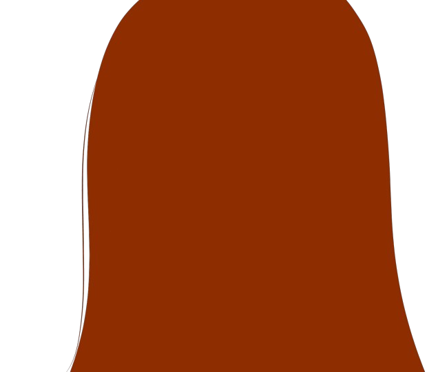
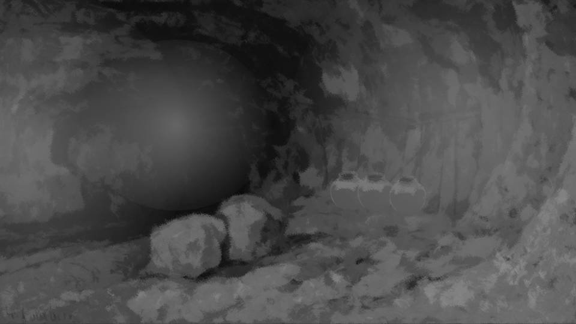
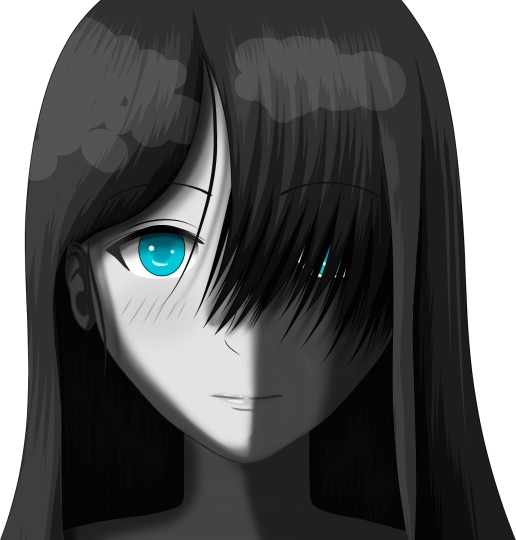

Script 00002464

"Sakura, are you there?"

"Kotaro, you're early today."
"Yeah, I thought I'd better tell you about today as soon as I could."
"Yeah, I thought I'd better tell you about today as soon as I could."
When I call out like this, Sakura appears from out of nowhere.
However, the lights in the cave have to be out, as they are now.
So where Sakura comes from and where she vanishes to, I still do not know.
However, the lights in the cave have to be out, as they are now.
So where Sakura comes from and where she vanishes to, I still do not know.

How many hundred times have I met Sakura here by now?
The Sakura who appears before me, as beautiful as she was in life, clothed in white.
Even so, Sakura says she is dead.
The Sakura who appears before me, as beautiful as she was in life, clothed in white.
Even so, Sakura says she is dead.

It makes me want to doubt that she really died.
Not only when we had to get our stories straight about the curse-killings, but even when I had no business at all, I came here and talked with Sakura.
Not only when we had to get our stories straight about the curse-killings, but even when I had no business at all, I came here and talked with Sakura.
The residents all used to say Sakura was like a goddess.
I am no different. Alive or dead, Sakura is like a goddess to me.
And at the same time, my one and only wife.
I am no different. Alive or dead, Sakura is like a goddess to me.
And at the same time, my one and only wife.
Just that someone like me got to be with Sakura is a miracle, I believe.
On top of that, even after Sakura died, I can meet her like this.
Where could there be a man more blessed than this?
On top of that, even after Sakura died, I can meet her like this.
Where could there be a man more blessed than this?
Still, lately I had begun thinking about a great many things.
With Natsumi-chan coming here like this, the divine messengers needed will be assembled.
At the same time, that means I will no longer be able to see Sakura as I have until now.
With Natsumi-chan coming here like this, the divine messengers needed will be assembled.
At the same time, that means I will no longer be able to see Sakura as I have until now.
If Sakura were taken from me...
Then what have I been doing all this for...
Then what have I been doing all this for...
"Is something wrong?"
"Ah, no, it's nothing."
"Ah, no, it's nothing."
"I see...
And what was it you needed to tell me so soon?"
"Today, after the thirteenth-year memorial service is over, I'll bring Natsumi-chan here."
"Today, after the thirteenth-year memorial service is over, I'll bring Natsumi-chan here."
"I see... So it's finally time."
"But to do it, I'll be using the residents as a feint."
"But to do it, I'll be using the residents as a feint."
"A feint?"
"I'll have the residents attack and take Natsumi-chan alive. By putting it about that Natsumi-chan is the culprit behind the curse-killings."
"I'll have the residents attack and take Natsumi-chan alive. By putting it about that Natsumi-chan is the culprit behind the curse-killings."
"............"
"Chigaya and Kana will surely both take Natsumi-chan's side.
If that happens, it'll be hard to kidnap her. So if everyone uses Droga, surely―"
"............
"............

Kotaro..."
"............!"
I saw it for the first time.
Sakura's expression, this one― a glare, that kind of expression.
"............!"
I saw it for the first time.
Sakura's expression, this one― a glare, that kind of expression.
"Kotaro, were you always this dim?"
"Huh...?"
This too was a first.
Sakura making a scornful remark about someone is beyond what I can imagine, even after hearing what she just said.
"Huh...?"
This too was a first.
Sakura making a scornful remark about someone is beyond what I can imagine, even after hearing what she just said.
"Won't Natsumi-chan get killed, that way?"
"N-no, but the circular notice clearly says they're to take her alive."
"N-no, but the circular notice clearly says they're to take her alive."

"Is there any guarantee everyone will listen to that?
They believe Natsumi-chan has been threatening this settlement, don't they?"
"That's...!"
"That's...!"
"Haah...
Ten years spent on this, and if you failed over something like that, I'd be so disappointed."
"Sakura...!"
"Sakura...!"

"Of course, if we moved directly, capturing her would be easy, you know?
But if even once someone saw us, it would be a disaster.
That's why we've relied on you, Kotaro, a living human, isn't it?"
"Because I'm... a living human...?"
"Because I'm... a living human...?"

"That's right?"
"Well, there's no stopping everyone now.
Kotaro, you'll bring Natsumi-chan here without fail, won't you?"
"............"
"............"
"All right?"
"Y-yeah... Without fail..."
"Y-yeah... Without fail..."
"Now, you had better head back too."
"............"
"Go on. I can't let you see me vanish."
"Th-then... I'll come again after the thirteenth-year memorial service."
"Th-then... I'll come again after the thirteenth-year memorial service."

It was probably the shortest conversation with Sakura I had ever had.
Was that really Sakura just now?
Alive or dead, she had been like a goddess to me.
But the Sakura of today...
Was that really Sakura just now?
Alive or dead, she had been like a goddess to me.
But the Sakura of today...
"That's why we've relied on you, Kotaro, a living human, isn't it?"
Sakura had been meeting me because I was a living human.
Not because I was her husband. Not because I was someone she loved.
Because a living human makes a handier pawn for advancing the plan.
Sakura had been meeting me because I was a living human.
Not because I was her husband. Not because I was someone she loved.
Because a living human makes a handier pawn for advancing the plan.
Yes, Sakura is dead, a divine messenger who obeys the will of Shigatsu Youka.
I had known that from the start.
But meeting the dead Sakura again and again...
Even that had grown hazy in my mind, and I had come to feel that simply being able to meet her like this was happiness.
I had known that from the start.
But meeting the dead Sakura again and again...
Even that had grown hazy in my mind, and I had come to feel that simply being able to meet her like this was happiness.
That time 7 years ago...

"Kotaro..."
"Sakura, I did it just as planned... I was being watched. But... this year, too, one person was killed."
"It was hard for you, wasn't it..."
"It's what I chose. I don't regret it."
But my legs were shaking so badly I could no longer stand.
"Sakura, I did it just as planned... I was being watched. But... this year, too, one person was killed."
"It was hard for you, wasn't it..."
"It's what I chose. I don't regret it."
But my legs were shaking so badly I could no longer stand.
"Kotaro!"
Sakura rushed straight to me where I had sunk down,
"Kotaro, it's okay."
And Sakura held me gently in her arms.
"It's okay. I'll always, always be on your side, Kotaro."
Held to a cold chest with no heartbeat, I shed tears without making a sound.
Sakura rushed straight to me where I had sunk down,
"Kotaro, it's okay."
And Sakura held me gently in her arms.
"It's okay. I'll always, always be on your side, Kotaro."
Held to a cold chest with no heartbeat, I shed tears without making a sound.
Of my own accord, I had helped with murder.
A settlement, small as it was, where everyone had lived by helping one another.
Leaving fellows like that to die...
As that guilt threatened to crush me, this cold skin warmed me.
A settlement, small as it was, where everyone had lived by helping one another.
Leaving fellows like that to die...
As that guilt threatened to crush me, this cold skin warmed me.

Yes, Sakura is dead, but she exists here like this.
Even now, Sakura's kindness soothes me.
Sakura gone, and me living on in a world like that...
I need Sakura after all...
Even now, Sakura's kindness soothes me.
Sakura gone, and me living on in a world like that...
I need Sakura after all...
Once a year, if someone in the settlement dies, another year of time with Sakura is promised.
Who does the killing, I do not know.
Sakura herself, or Eiichiro, or some other corpse.
All I have to do is stay silent.
Or misdirect everyone as needed.
Until this settlement is gone, I need only go on like this.
Who does the killing, I do not know.
Sakura herself, or Eiichiro, or some other corpse.
All I have to do is stay silent.
Or misdirect everyone as needed.
Until this settlement is gone, I need only go on like this.
Walking along, going back over all that, I found I was already outside.
Before I knew it I had climbed the ladder and closed the entrance―
Before I knew it I had climbed the ladder and closed the entrance―

I drew in a deep breath of the outside air.
Now, should I stop here?
Or should I keep going as I am?
............ There cannot be any choice.
Now, should I stop here?
Or should I keep going as I am?
............ There cannot be any choice.
What happens if I stop here?
To begin with, what would I have to do to 'stop'?
That is simple: I only have to tell everyone to get away from here at once.
Then how do I explain why they have to run?
How could I explain away why I know any of this?
A choice... there cannot be one.
To begin with, what would I have to do to 'stop'?
That is simple: I only have to tell everyone to get away from here at once.
Then how do I explain why they have to run?
How could I explain away why I know any of this?
A choice... there cannot be one.
My life and my daughters' lives are already in the palm of the devil that nests here.
Too late, I am made to realize how foolish I have been.
But now... there is no turning back.
Too late, I am made to realize how foolish I have been.
But now... there is no turning back.